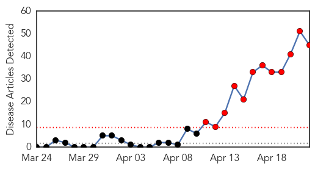
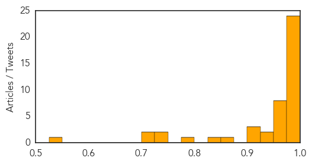
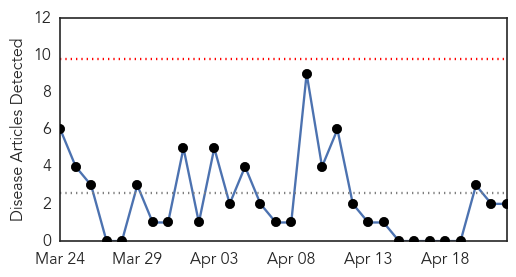
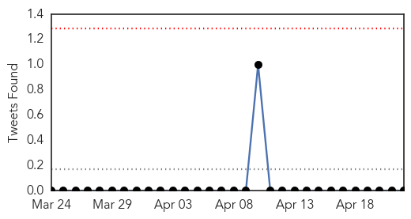
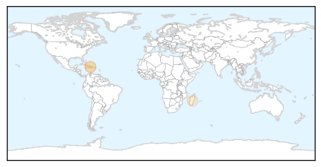
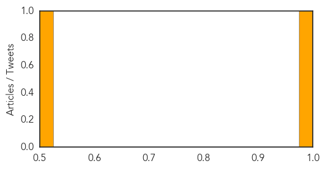

MERS
30-Day Web Trend
12 alerts, 0 warnings

30-Day Twitter Trend
1 alerts, 0 warnings

Article Locations

Article Confidences
Top Articles:
- 1.000
- 5 more Mers cases tested negative in UAE - Emirates 24
- 1.000
- Saudi Arabia seeks outside help to combat deadly MERS outbreak
- 0.999
- Middle East respiratory syndrome coronavirus (MERS-CoV) – update
- 0.999
- MERS death toll hits 81 in Saudi, which sacked its health minister
- 0.999
- MERS death toll hits 81 in Saudi Arabia
- 0.999
- MERS death toll hits 81 in Saudi
- 0.999
- OFWs reminded on ways to avoid MERS-CoV infection
- 0.999
- Filipinos in Mideast urged to take precautions vs MERS virus
- 0.999
- Saudi Arabia fires health chief amid deadly virus surge
- 0.998
- Patient in ‘critical condition’ — RT News
- 0.998
- MERS Cases Jump in Saudi Arabia; Death toll rises to 81
- 0.997
- S. Arabia announces jump in new cases of deadly MERS virus
- 0.997
- HAAD announces two cases diagnosed with MERS Coronavirus tested negativeUAE
- 0.997
- Jump in new cases of deadly Mers virus in Saudi
- 0.997
- Saudi minister sacked amid virus deaths
- 0.997
- No ordinary illness
- 0.995
- OWWA joins search for Etihad passengers
- 0.994
- MERS Contagion Threat Rises as Saudis Fumble
- 0.991
- MERS spreading in Saudi Arabia, official concerns growing
- 0.991
- Greece Reports First Case of MERS-CoV
- 0.991
- MERS-CoV scare: Search for 174 passengers intensified
- 0.989
- Top Stories
- 0.987
- OFWs from UAE quarantined in GenSan, Sarangani for possible MERS infection
- 0.977
- Saudi Arabia seeks outside help to combat MERS outbreak
- 0.975
- S. Arabia removes health minister over virus outbreak
- 0.972
- Possible clinical predictors of MERS identified
- 0.968
- Philippines DOH still looking for 174 Etihad Airlines passengers, issue health alert for int’l travelers
- 0.968
- MERS virus: 4 Etihad passengers isolated in North Cotabato
- 0.965
- Five cleared of Mers infection, says Abu Dhabi health authoriity
- 0.964
- 11 OFWs vacationing in Mindanao monitored for MERS
- 0.962
- 18 Central Luzon residents on Etihad flight test negative for MERS
- 0.952
- Punto! Central Luzon -
- 0.933
- Despite President’s orders, not all Etihad passengers located
- 0.928
- Gov't urged to monitor OFWs in MERS-Cov areas
- 0.917
- No additional vaccine needed
- 0.907
- 17 in Central Visayas being observed for MERS-CoV
- 0.901
- Saudi replaces health minister as Mers toll rises
- 0.855
- 172 Etihad passengers tested
- 0.845
- U.S. Farms Hit Hard With Disastrous Pig Disease
- 0.780
- Saudi King dismisses health minister over MERS cases
- 0.746
- USDA Makes PED Reportable Disease
- 0.740
- Killer MERS virus claims two more Saudis
- 0.722
- Additional Actions to Combat Spread of Diseases Among US Pork Producers
- 0.703
- Deadly Pig Virus
- 0.550
- Schools seek ministries' advice over coronavirusHealthcare
Top Tweets:
-
No tweets found for Apr 22, 2014
Cholera
30-Day Web Trend
0 alerts, 0 warnings

30-Day Twitter Trend
0 alerts, 0 warnings

Article Locations
Article Confidences
Top Articles:
Top Tweets:
-
No tweets found for Apr 22, 2014